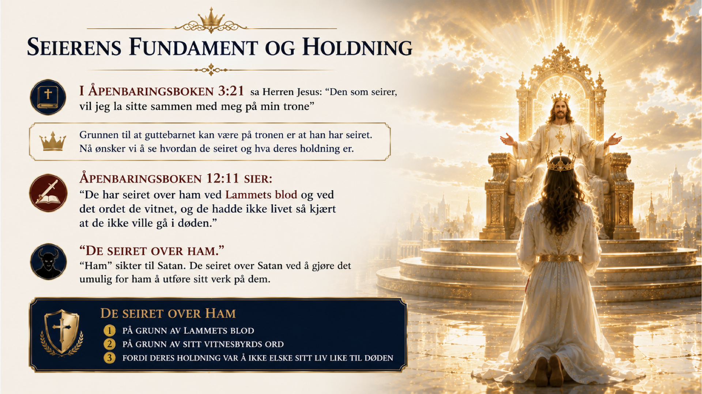
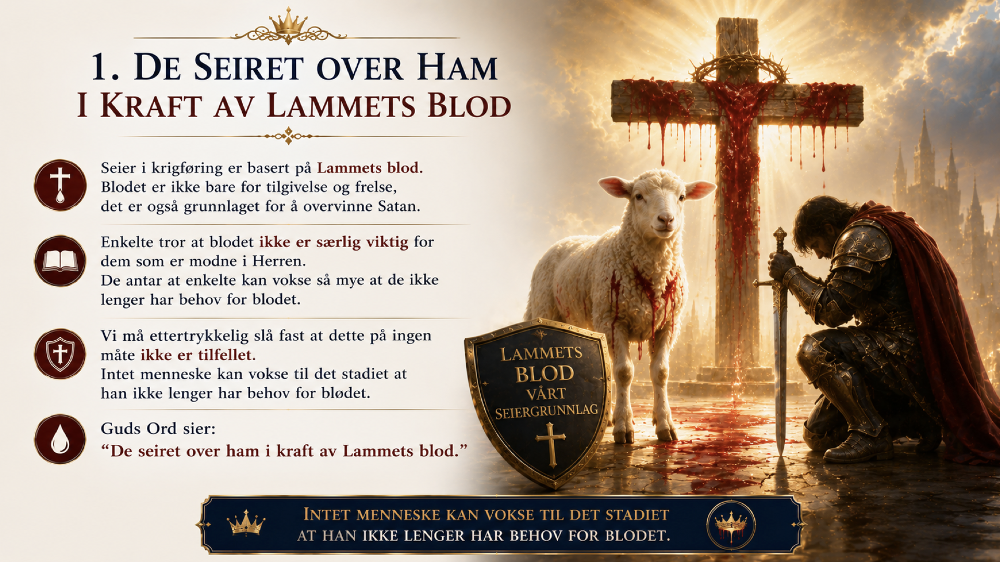
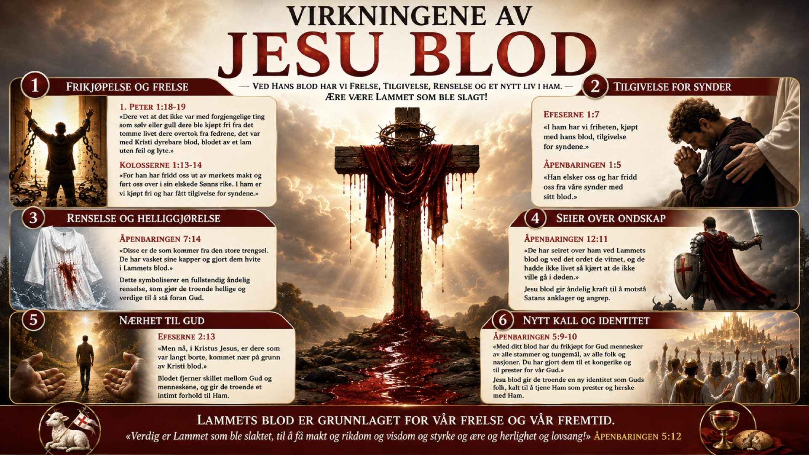
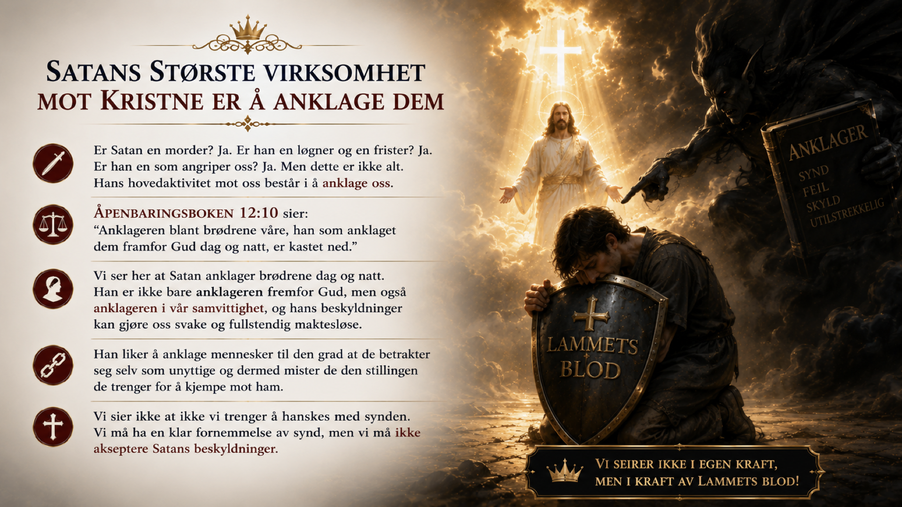
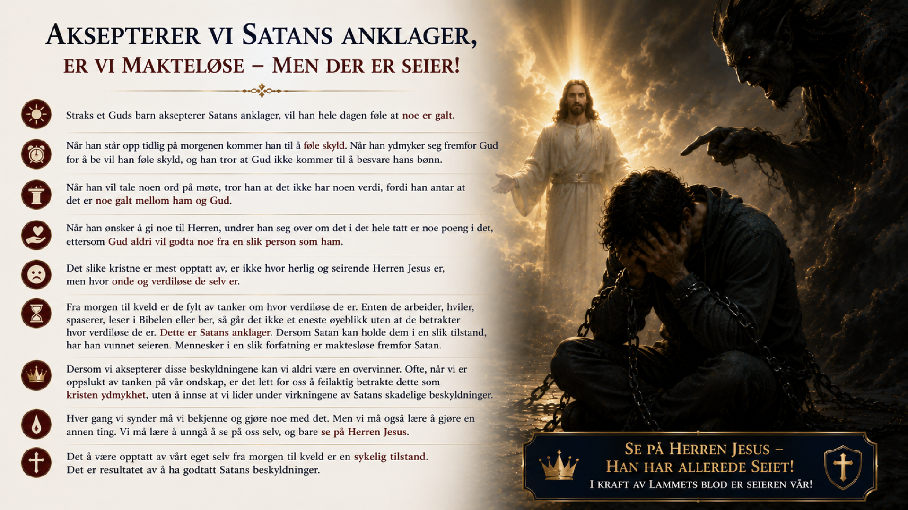
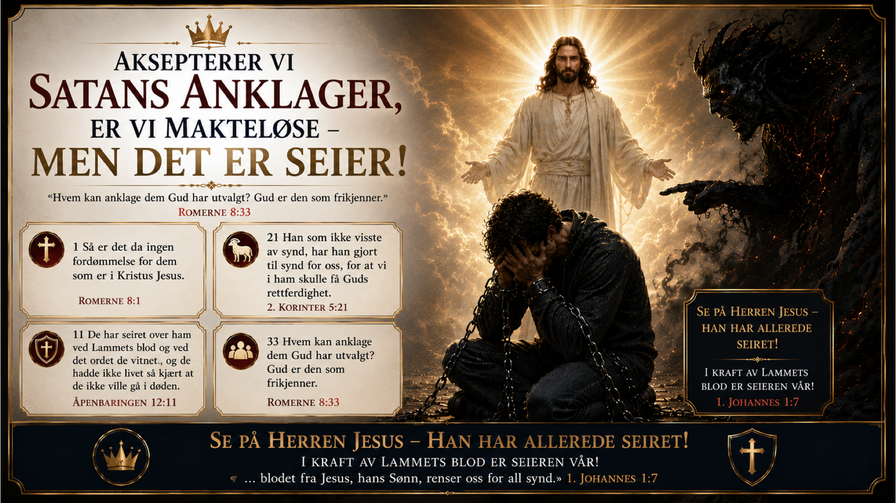

Side 87 — Tittel

Side 88 — Åpenbaringen 12:11

Side 89 — Seierens fundament og holdning

Side 90 — I kraft av Lammets blod

Side 91 — Virkningene av Jesu blod

Side 92 — Satans anklager

Side 93 — Aksepterer vi Satans anklager

Side 94 — Men det er seier!